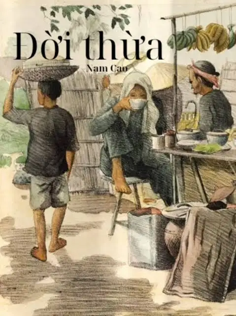

Thông tin tác phẩm
- Tác giả Nam Cao
- Năm sáng tác 1943
- Thể loại Truyện ngắn hiện thực
- Ngôn ngữ Tiếng Việt

“Kẻ mạnh không phải là kẻ giẫm lên vai người khác
để thỏa mãn lòng ích kỷ.”
“Sáng hôm sau. Hắn thức dậy trên cái giường nhà hắn. Hắn thấy mình mẩy đau như dần, đầu nặng, miệng khô và đắng. Cổ thì ráo và rát cháy... Hắn bùi ngùi. Chao ôi! Trông Từ nằm thật đáng thương! Hèn chi mà Từ khổ cả một đời người! Hắn dịu dàng nắm lấy tay sã xuống của Từ... Một vẻ bạc mệnh, một cái gì đau khổ và chật vật, cần được hắn vỗ về an ủi... Thế mà hắn đã làm gì để cho đời Từ đỡ khổ hơn? Nước mắt hắn bật ra như nước một quả chanh mà người ta bóp mạnh. Và hắn khóc... Ôi chao! Hắn khóc! Hắn khóc nức nở, khóc như thể không ra tiếng khóc.”